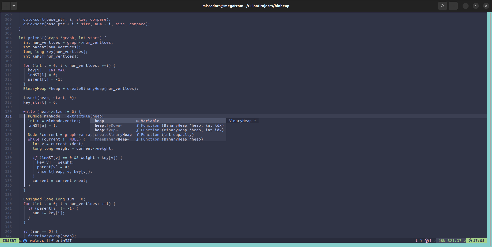

It's what you notice first and makes an impression. Personally, having a nice looking and customised setup makes me feel good and cozy in the enviroment I'm working in. That's why I spent quite a lot of time customising.
Starting off with the basic customisation you can do, a wallpaper. I started using Linux with the mentality of just having fun with it, so I didn't go for anything that's serious looking, rather something that's nice and makes me smile. You can find my wallpaper here.
Continuing with customisation you can do through Tweaks. You can get Tweaks using:
sudo apt install gnome-tweaks
The icons I'm using are Colloid Pastel icons, more specifically, the teal light ones. I have a habit of using a custom dinosaur cursor on Windows, so I had to use a custom cursor on Linux as well. I went for a Hatsune Miku cursor that my boyfriend found for me. Lastly, my shell theme is this Graphite Multicolor theme, specifically the dark teal one, which I have tweaked a little bit to suit my liking.
Three things I didn't like about the theme was the height of the bottom taskbar, the fact that it's not transparent, as I was used to the transparency of the default Ubuntu theme, and the color of the clock. I edited all of these in the theme CSS:
cd path_to_your_theme/Graphite-teal-Dark-nord/gnome-shell
nvim gnome-shell.css
For the taskbar edits, I added these selectors:
#dashtodockContainer {
background-color: transparent;
height: 75px;
}
#dashtodockContainer #dash {
height: 75px;
}
And edited this one. Adding an alpha channel to the hex code didn't work as expected. It did make the taskbar transparent, but the level of transparency didn't change with different values. So I converted the original hex colour to rgb and added an alpha channel there. The RGBA model worked well.
#dashtodockContainer.dashtodock #dash .dash-background {
background-color: rgba(41, 46, 56, 0.75);
}
As you may have noticed, my neofetch shows custom ASCII art instead of the Ubuntu logo. This is actually really simple to achieve. You just need to find some ASCII art that you like and copy it into a .txt file. Neofetch has a lot of options by default, which you can see by typing 'neofetch --help' into the terminal. One of these options is to show custom ASCII art, but it's not permanent. The way I made it permanent everytime I use neofetch is through putting an alias into the .bashrc file. You can locate .bashrc in your home directory:
nvim .bashrc
And add this line of code either at the top or bottom of the file (simply put, anywhere, where you won't mess up a preexisting function):
alias neofetch='neofetch --ascii /path_to_your_txt/file_name.txt'
When using Linux, you're going to spend a lot of time in the terminal. And it's most likely, you'll need to use tutorials and copy-pasting to accomplish your goals. The default shortcuts for copy and paste in the Ubuntu terminal are Ctrl+Shift+C and Ctrl+Shift+V, respectively. This is, thankfully, a very easy fix.
In your terminal, go to ... -> Preferences -> Shortcuts and edit any shortcut you don't find to be optimal.
Staying within the theme of terminal, the default colors look quite bad in my opinion. Inside the Preferences menu, there is a Profiles section, where you can change the color scheme of your terminal. I manually changed the colors to use an (unofficial) color pallette of Hatsune Miku, to keep up with the Miku theming.
A lot more interesting way to customise your terminal color scheme is through Pywal. It changes your terminal colors to the color scheme of whichever picture you input into it.
It turned out to make a really good looking scheme using my wallpaper, but I was way too used to my own scheme, so I didn't keep it. But I do recommend it, so an easy tutorial for Pywal is here.
A huge issue I had when switching from Windows to Ubuntu was the difference in the Slovak keyboard layout. I am used to the Slovak layout and find it comfortable to code with, so I didn't consider switching to the US layout. The most common way to have a custom keymap is through an .xkb file and a startup script. However, no matter how hard I tried, it never seemed to work beyond rebooting.
I ended up editing the config file for the layout. I have read that this route may not withstand a system update and you'd be forced to edit it again, but nothing like that has happened to me yet. In order to do this you need to cd to your root. Either this way:
cd /
Or this way:
cd ..
cd ..
Then you navigate to the XKB directory:
cd usr/share/X11/xkb/symbols
And edit any keybind you need: (this is a read-only file, so in order to edit it, you need to sudo)
sudo nvim sk
Explaining the entire config file would be lengthy, but you can find a consise explanation here.
I found out about Neovim through a friend of mine. It didn't really interest me, as I was content using JetBrains IDEs for anything I needed to code and debug. The deciding factor that made me switch to Linux was really useful debug tools for C, such as Valgrind, which I had to use very often for uni. It did however annoy me to open up a heavy duty IDE just to edit one line of code and then switch to debug in terminal. That's when I started using Neovim, even through my partner's constant perstering to start using it earlier.
As a newbie in everything Linux and terminal related, Neovim itself seemed to be a little too daunting for me. That's why I chose to go the LazyVim route.
Vim and Neovim are simply text editors, but LazyVim elevates Neovim to be ready for coding right after setup, without needing any prior knowledge about anything Vim related. The setup of LazyVim is quite easy if you use the tutorial on the website that is linked above. You need the latest version of Neovim however, which was really easy to get on Arch, as the pacman package manager has the latest version ready to be installed. Ubuntu is lagging behind in this and only offers release 0.6 through apt-get. So you need to install it externally. Here are Neovim releases with simple tutorials on how to install them.
As for what I chose to configure, it wasn't much and mostly just personal preferences.
When it comes to the hjkl controls, for some reason the j and k binds weren't very intuitive for me, so I swapped them for comfort. I really like the Catpuccin color scheme so I decided to use it on Neovim too. A change that is completely for fun, is that I renamed LazyVim to MikuVim on the dashboard that comes with LazyVim using this online tool to generate the title. This can be done in the dashboard-nvim plugin. Last thing I did is a very roundabout way of fixing an issue. No matter how hard I tried, I simply couldn't stop the mason-lspconfig plugin throwing an error message related to ruff-lsp. It got very annoying, so I simply put this line before any line that would display an error:
if lspconfig_name ~= "ruff_lsp" then
Into this file:
~/local/share/nvim/lazy/mason-lspconfig.nvim/lua/mason-lspconfig/install.lua
Simply put, it would show me an error for any issues with packages except for ruff-lsp.
I didn't provide any code snippets for the rest, since my entire Neovim config is in my GitHub repository. You can either look through the files, or if you wish to use the config, simply clone the repo into your config directory.